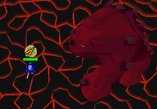

When TzTok-Jad was released he claimed the title as the most powerful boss in RuneScape, succeeding the Kalphite Queen. This boss is difficult because he changes his attack styles and he spawns healers when he gets to half health. The best way to fight him is to switch your prayers according to the attack he is about to use, like the picture below.  The player can accurately predict which attack the boss will use by the sound, and by his movement pattern. To predict by movement, look at the feet. If the boss will attack with range it will be a short quick stomp, but if it is magic he will stand on his back legs for a little longer. The player has to successfully predict his attack everytime or risks being killed in one shot.